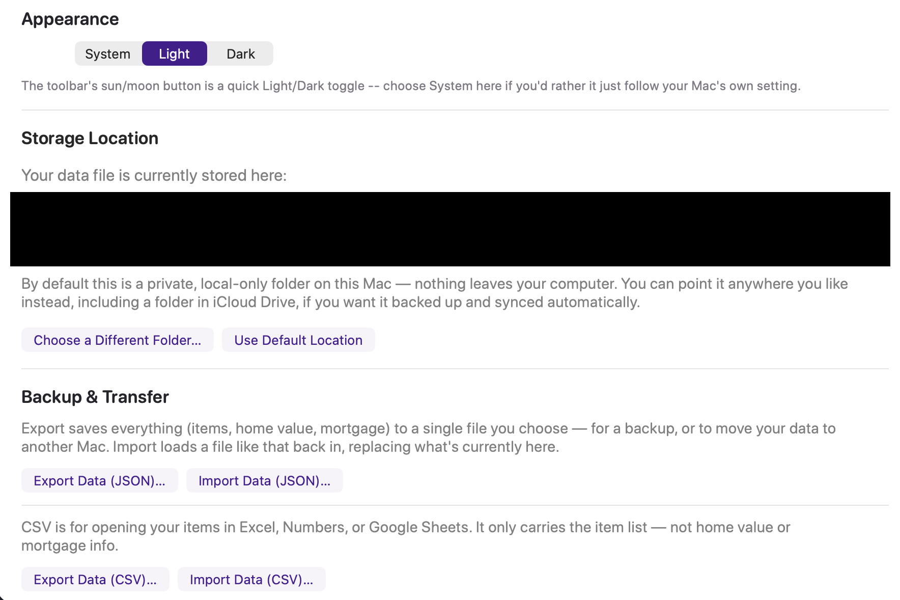
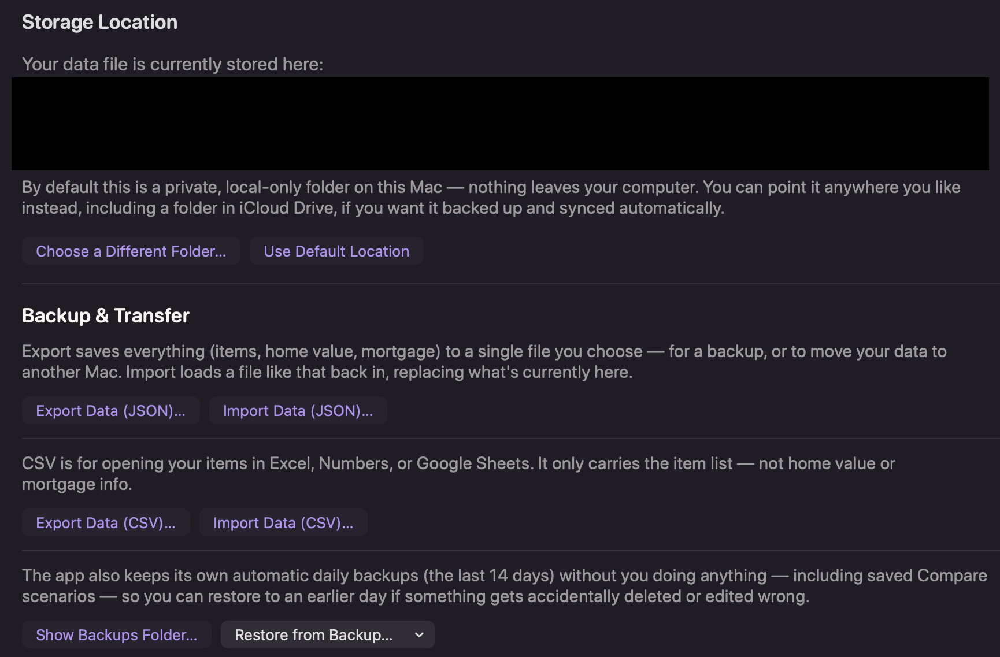
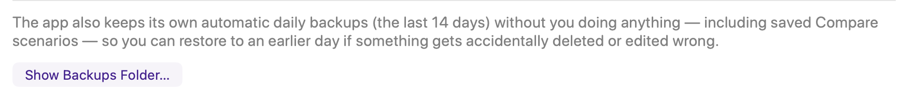
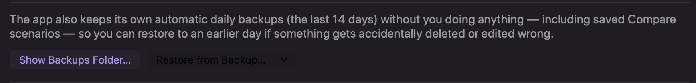
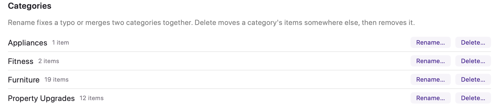
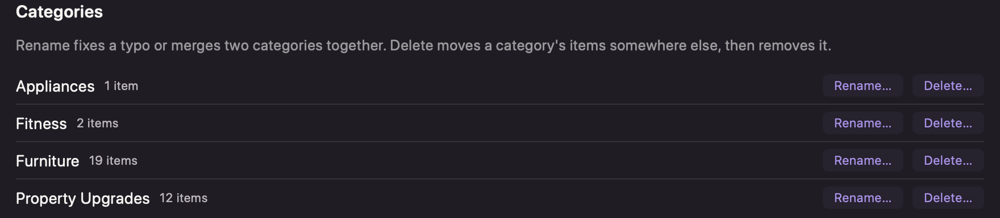
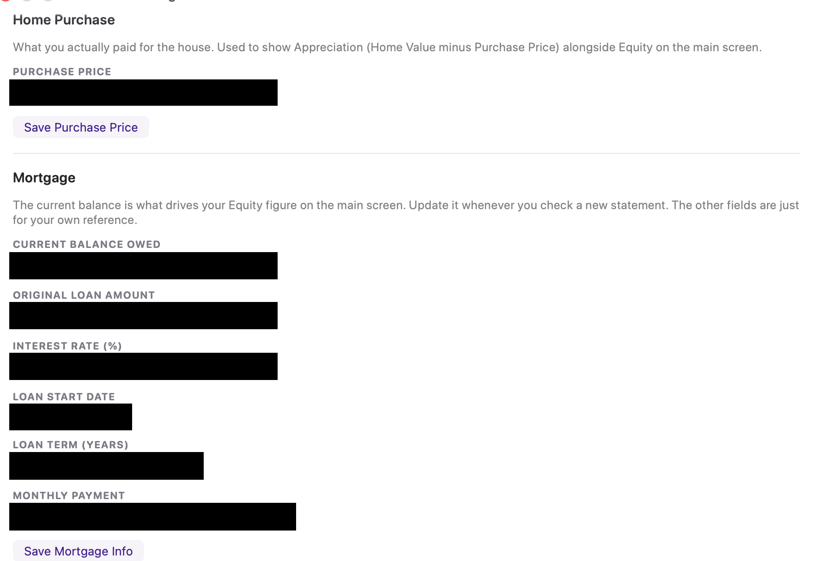
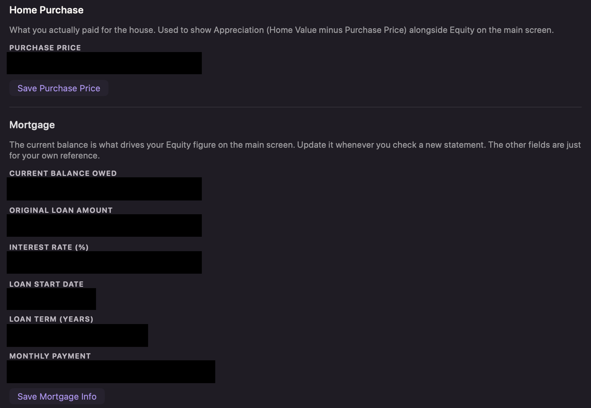

⚙️ Settings
Everything about how and where your data lives, plus the house-level facts (purchase price, mortgage) that feed the rest of the app.
Appearance
Choose Light, Dark, or System (follows your Mac's own setting automatically). The toolbar's sun/moon button is a quick toggle between Light and Dark for whenever you want to override System for a moment.
Storage Location


By default your data file lives in a private folder inside the app's own sandbox — nothing you need to think about. Click Choose a Different Folder… to point it anywhere you like instead, including a folder inside iCloud Drive or Dropbox, which gets your data backed up and synced across your other Macs automatically, using tools you may already have — the app itself doesn't do any syncing.
Backup & Transfer


- Export Data (JSON) — saves everything (items, home value, mortgage, saved scenarios) to one file. Use this for a manual backup or to move your data to another Mac.
- Import Data (JSON) — loads a file like that back in, replacing what's currently in the app.
- Export/Import Data (CSV) — for opening your item list in Excel, Numbers, or Google Sheets. Only carries the items, not Home Value or mortgage info.
- Automatic backups — the app quietly saves a backup every day, keeping the last 14. Click Restore from Backup… to roll back to an earlier day if something gets accidentally deleted or edited wrong. No setup required — this just happens.
Categories


Rename fixes a typo, or merges two categories into one (rename "Furnature" to "Furniture" and they combine). Delete asks where to move that category's items first, so nothing gets lost — it never silently deletes items along with the category.
Home Purchase & Mortgage


These two feed the numbers everywhere else in the app:
- Purchase Price — what you actually paid for the house. Used to calculate Net Gain (Home Value minus Purchase Price) alongside Equity on the main screen.
- Current Balance Owed — the one field you'll actually update over time, whenever you check a new mortgage statement. This is what drives your Equity figure.
- Original Loan Amount, Interest Rate, Loan Start Date, Loan Term, and Monthly Payment are all there just for your own reference — they don't feed into any calculation elsewhere.